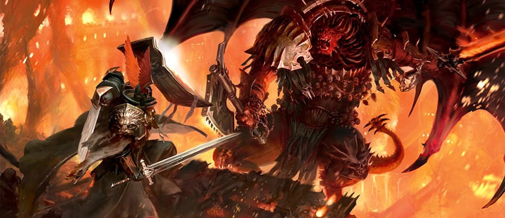
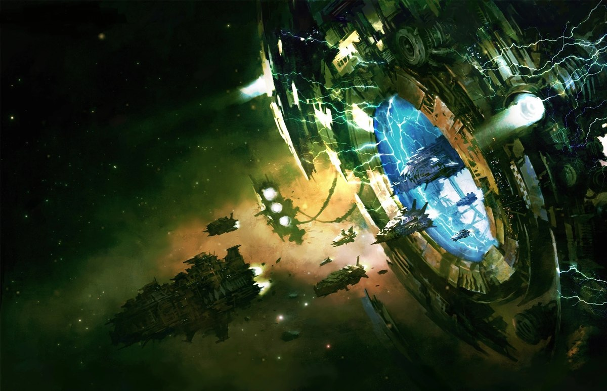

Era Indomitus
| Era Indomitus | |
|---|---|
| Age of the Dark Imperium | |
 The Daemon Primarch Perturabo and the Iron Warriors assault the Cadian Gate, one of the first wars of the Era Indomitus Artwork © Games Workshop | |
| Began | 999.M41, with the Fall of Cadia and the opening of the Great Rift |
| Preceded by | The Time of Ending (late M41) |
| Named for | The Indomitus Crusade |
| Ruler | Emperor of Mankind (enthroned) Roboute Guilliman, Lord Commander of the Imperium and Imperial Regent |
| Seat | Terra |
| Divisions of the Imperium | |
| South and west | Imperium Sanctus |
| North and east | Imperium Nihilus, under the Regent Commander Dante |
| Link | The Nachmund Gauntlet |
| Key events | |
The Era Indomitus, also called the Age of the Dark Imperium, is the present age of the Imperium of Mankind. Imperial scholars date it from 999.M41, when the Fall of Cadia at the end of the Thirteenth Black Crusade was followed by the opening of the Great Rift, a band of Warp storms that crossed the galaxy from the Eye of Terror to the Hadex Anomaly and cut the Imperium in two. The age takes its name from the Indomitus Crusade, the counteroffensive proclaimed by the restored primarch Roboute Guilliman after he reached Terra and took up the office of Lord Commander of the Imperium.[1][2]
The era is defined by division. South and west of the Rift lies the Imperium Sanctus, where the Astronomican can still be seen and Terra still governs. North and east lies the Imperium Nihilus, the Dark Imperium, where the light of the Emperor failed during the long night called the Noctis Aeterna and has never fully returned. Between them runs a single stable passage, the Nachmund Gauntlet. Across both halves the Imperium has fought wars on a scale not seen since the Horus Heresy: against the daemon legions released by the Rift, against the Traitor Legions and their returning primarchs, and against the xenos powers that have used the chaos to advance.[1][3]
It is also an age of return and reform. Guilliman's restoration was followed by the founding of the Primaris Space Marines, a revision of the Codex Astartes, and the first serious reform of the Adepta in ten thousand years. In the 42nd millennium the primarch Lion El'Jonson returned to the Dark Angels. On the side of the enemy, the daemon primarchs Angron, Fulgrim, Perturabo, Magnus the Red and Mortarion have all walked in realspace again, and the Warmaster Abaddon the Despoiler has allied with the daemon Vashtorr the Arkifane. In the most recent decades the Imperium has faced the largest Tyranid invasion yet recorded, the Fourth Tyrannic War, and the silent Necron empire of the Pariah Nexus.[1][4][5]
Name and dating
[edit]The name Indomitus, "unconquered", was given first to the Lord Commander's crusade and then, in the decrees of the Administratum and the histories of the Logos Historica Verita, to the age as a whole. The phrase "Dark Imperium" is older and less official; it began as a description of the Imperium Nihilus and came to be used of the whole period.[2]
Dating within the era is notoriously uncertain. The opening of the Rift disturbed the passage of time itself. In some regions time ran faster than on Terra, in others slower, and fleets that left port together arrived years apart. In the same period the Lord Commander's scholars found errors in the Imperial calendar going back many centuries, so that even the year 999.M41 is a convention rather than a measurement. The Inquisition calls the dispute over dates the Chronostrife. Many war zones adopted local systems counted from the moment the Rift opened above them; the best known is the "Vigilus template", in which an event is dated in years and eight-hour segments before (previo) or after (post) the Rift's appearance over that world.[2][6]
This article follows the practice of the Administratum, which continues the old count. Most events of the era are therefore dated to the late 41st or early 42nd millennium, and many can only be placed relative to one another.[a]
Origins
[edit]The Thirteenth Black Crusade
[edit]The age began in catastrophe. In 999.M41 Abaddon the Despoiler launched the Thirteenth Black Crusade against the Cadian Gate. After a long campaign the Despoiler drove the Blackstone Fortress Will of Eternity into the surface of Cadia, breaking the world and the pylons that had stabilised the Eye of Terror. The surviving defenders, under the living saint Celestine, the Inquisitor Katarinya Greyfax and the Archmagos Dominus Belisarius Cawl, escaped through the Webway with the help of the Aeldari.[7]
Within days the Warp storms that had gathered around the Eye spread outward. They joined with older storms and with rifts opened elsewhere, including the shattering of the Aeldari craftworld of Biel-Tan and the sorceries of the Thousand Sons, until a single tear, the Cicatrix Maledictum, stretched across the galaxy. The Great Rift had opened.[7][2]
The Noctis Aeterna
[edit]For a period that lasted thirty-three days on Terra and decades or centuries elsewhere, the Astronomican could not be seen beyond the Rift, astropaths died in their choirs, and Warp travel became almost impossible. The Imperium calls this the Noctis Aeterna, the Eternal Night. Daemon incursions broke out on thousands of worlds. Contact was lost with nearly half of the thousand Chapters of the Adeptus Astartes, and at least twelve Chapter homeworlds were destroyed or overrun, among them Pranagar of the Sky Sentinels, taken by Magnus the Red, and Sabatine of the White Consuls. When the night lifted in the south and west, the Imperium learned how much it had lost.[2][1]
The return of Guilliman
[edit]The survivors of Cadia went to Macragge, where the primarch Roboute Guilliman had lain in stasis since his wounding by Fulgrim at Thessala in the 31st millennium. With the aid of the Ynnari prophet Yvraine and the god Ynnead, and the technical genius of Cawl, Guilliman was restored to life in the Fortress of Hera, while the Black Legion's fleet attacked the world. He cleared Ultramar of the enemy and set out for Terra in the Terran Crusade. The journey cost him most of his fleet, and he reached Terra through the Webway at Luna. After an audience with the Emperor that lasted a single day, he took up again the office of Lord Commander and Imperial Regent.[8][9]
The Warp storm that had followed him reached the Throneworld soon after. A Khornate daemon host broke through to the Lion's Gate of the Imperial Palace, and the Lord Commander defeated it in what the people of Terra call the Battle of Lion's Gate, or the Second Battle of Terra. It was the first fighting on Terra since the Siege, and it convinced the High Lords of Terra that no place in the galaxy was now safe.[1]
The divided Imperium
[edit]
When the Noctis Aeterna receded, the Imperium was two realms. The Imperium Sanctus, made up of the Segmenta Solar, Pacificus and Tempestus and parts of Obscurus and Ultima, could again see the Astronomican and receive the decrees of Terra. The Imperium Nihilus, the worlds beyond the Rift, could not. Many of its systems were not heard from again, and those that survived fought alone, often for years before learning that the Lord Commander had returned.[3][10]
The two halves are linked by one stable channel through the Rift, the Nachmund Gauntlet, held open by deposits of polarised blackstone on the worlds at either end: Vigilus on the Nihilus side and Sangua Terra on the Sanctus side. Its security has been the object of several of the era's greatest wars. To govern the far side of the Rift, Guilliman named Commander Dante of the Blood Angels Regent of the Imperium Nihilus after the relief of Baal.[6][11]
Reform and the Ultima Founding
[edit]Guilliman returned to an Imperium he did not recognise. He removed several of the High Lords from office on the authority of the Emperor's mandate, filled their seats with officers of his own choosing, and began a programme of reform that touched the Administratum, the Adeptus Ministorum and the Adeptus Mechanicus. He founded the Logos Historica Verita to recover an accurate history of mankind, and set his scholars to revising the Codex Astartes.[2][12]
His chief military instrument was the Ultima Founding. Belisarius Cawl had laboured in secret on Mars for ten thousand years, on Guilliman's own orders, to produce a stronger Space Marine. Cawl's Primaris Space Marines were sent to every surviving Chapter, used to raise hundreds of new ones, and carried by the fleets of the Indomitus Crusade to worlds that had not seen an Astartes in generations. Firstborn Marines who undergo the procedure to join them are said to have crossed the Rubicon Primaris.[13]
The reforms were resisted. During the crusade a faction of serving and former High Lords, called the Hexarchy and led by the deposed Master of the Administratum Irthu Haemotalion and the former Ecclesiarch Baldo Slyst, attempted to take Terra while the Lord Commander was absent and restore what they called the Imperium Eterna. They brought the Minotaurs Chapter to the Throneworld under false pretences. The coup failed when the Grand Master of Assassins, Fadix, revealed that he had served the Lord Commander throughout, and gave the signal for each conspirator to be killed.[14]
The early wars
[edit]The Indomitus Crusade
[edit]From Terra Guilliman launched the Indomitus Crusade, the largest military effort of the Imperium since the Great Crusade. Its numbered fleets, each with its own Primaris contingents, Astra Militarum armies and Mechanicus support, broke sieges and relieved worlds across the Imperium Sanctus and pushed into the Nihilus. By the Lord Commander's own records its first phase lasted about twelve years and ended at the Battle of Raukos in c. 012.M42, when the crusade defeated a Traitor alliance of the Word Bearers, Iron Warriors and Black Legion at the Warp rift called the Pit of Raukos.[1]
Baal and Vigilus
[edit]In the north the Blood Angels had been fighting for their existence when the Rift opened. A tendril of Hive Fleet Leviathan had stripped the Cryptus shield worlds and descended on Baal. The Devastation of Baal ended when the Rift swallowed much of the hive fleet and an Indomitus fleet under Guilliman arrived, though the Khornate daemon Ka'Bandha left a mountain of Tyranid skulls on Baal Prime to show that he too had been there.[11]
At the far end of the Nachmund Gauntlet, Vigilus was attacked in turn by Orks, Genestealer Cults, Aeldari, Drukhari and finally the Black Legion. The conflict, the War of Nightmares, was held by Marneus Calgar of the Ultramarines, who fought Abaddon himself in the palace of Saint's Haven and was cut down by the daemon sword Drach'nyen. The Despoiler withdrew when his flagship was crippled, and the Gauntlet held.[6]
The Psychic Awakening
[edit]The flood of Warp energy through the Rift caused the phenomenon the Imperium calls the Psychic Awakening. The number of human psykers rose sharply, latent gifts appeared in whole populations, and the powers of the Aeldari and the miracles of the faithful became stronger. Magnus the Red called the new psykers to his Prosperan Rift, Kor Phaeron of the Word Bearers attacked the shrine world of Benediction and was turned back by the Saints' Wall, and on Benediction and elsewhere the Ecclesiarchy recorded acts of faith on a scale unknown since the Age of Apostasy.[15]
The Plague Wars
[edit]The Death Guard under their Daemon Primarch Mortarion invaded Ultramar from the Scourge Stars, bringing Nurgle's gardens to its worlds and destroying its defence fleet. Guilliman returned from the crusade to meet them. In the Plague Wars the brothers fought to a standstill on Iax, and Mortarion withdrew. The Lord Commander ordered Ultramar rebuilt and began the long Ultramarian Reclamation of its five hundred worlds.[16]
The present age
[edit]In the decades that followed the Plague Wars the character of the era changed. The early wars had been a struggle to survive the opening of the Rift. Those of the 42nd millennium have been fought against enemies who have had time to plan.[1]
The return of the primarchs
[edit]
The most consequential change has been the return of the primarchs to the field. Lion El'Jonson, missing since the Great Scouring, woke in the 42nd millennium and returned to the Dark Angels. He was the second loyal primarch to come back after Guilliman. Of the traitors, Angron re-entered realspace aboard his old flagship the Conqueror, took back command of the World Eaters and destroyed the Choral Engine of Malakbael, an artefact that could have served as a second Astronomican for the Nihilus. Since the Rift opened, the Ordo Malleus reports, he can no longer be banished for long: he returns, according to its records, eight weeks, eight days and eight hours after each defeat.[4][17]
Fulgrim ended his long seclusion on the daemon world of Callax, gathered the scattered Emperor's Children and began a crusade that he has declared will end on Terra, where he means to claim the place of the Emperor's true heir. His first conquest was the industrial world of Crucible, where the Cadian garrison and a Black Templars crusade under the Emperor's Champion Johannes Brengar were wiped out. Perturabo left Medrengard for the first time in many millennia and opened the campaign his Iron Warriors call the Infinite Citadel, a siege on the scale of whole sectors, beginning at the remaining fortress worlds of the Cadian Gate, which he intends to extend world by world toward Terra.[18][19]
The Arks of Omen
[edit]After Vigilus the Despoiler accepted an alliance with Vashtorr the Arkifane, master of the Forge of Souls, who told him that the fragments of an ancient Key lay scattered across the galaxy, and that the Key, once restored, would unlock a weapon able to destroy the Imperium. Vashtorr built the Arks of Omen, warships made from space hulks, and Abaddon gave them to his lieutenants. In the campaign that followed, the Arks of Omen, the Black Legion and its allies attacked the Dark Angels' fortress-monastery, the Rock, and many other worlds of the Nihilus. The final battle, at the false world of Wyrmwood made from the ruins of Caliban, saw the Lion strike Angron down, but Vashtorr completed the Key and vanished into the Warp. Imperial strategists reckon the campaign a victory for Abaddon.[4]
The Fourth Tyrannic War
[edit]While the Imperium's strength was turned toward the Rift, Hive Fleet Leviathan returned. Its largest mass yet recorded rose from below the galactic plane into the western reaches of the Segmentum Pacificus, where the Imperium's defences were thinnest, in tendrils that the Ordo Xenos named Nautilon, Promethor and Grendyllus. The Fourth Tyrannic War that followed has cost the Imperium the hive world of Oghram and threatened the Chapter world of the White Templars at Sanctum. The High Lords answered with Solblades, small strike fleets that hunt the hive fleets' synaptic organisms behind their advance. Imperial analysts believe that Leviathan's course leads toward Terra.[5]
The Pariah Nexus
[edit]In the Nephilim Sector the Indomitus Crusade found a region where the Warp had gone silent. The Necrons under the Silent King, Szarekh, had built a lattice of blackstone pylons that severed the sector from the Immaterium and drained the will of its people, an affliction called the Stilling. The war for the Pariah Nexus has drawn in Imperial crusade fleets, rival Necron dynasties and the forces of Chaos. It remains the most dangerous xenos war of the age, for the Silent King's stated purpose is to cut the galaxy free of the Warp entirely, whatever the cost to the living.[20]
The Fourth War for Armageddon
[edit]
On Armageddon, which had already been fought over by Orks and daemons in the Noctis Aeterna, the Warlord Ghazghkull Thraka returned without warning. His fleets crossed the Warp through a vast Ork teleportation engine and arrived in the system at once, falling on defenders who had no time to prepare. Commissar Sebastian Yarrick, long reported dead, returned to the hive world to lead its defence, and his distress call was answered by more than two dozen Chapters of the Adeptus Astartes in a coalition named Operation Imperator.[21][b]
Other powers
[edit]The Rift was not only a disaster for mankind. The T'au Empire lost its Fourth Sphere Expansion fleet in the Warp storms, but recovered and launched a Fifth Sphere into the Chalnath Expanse. The Necrons woke in greater numbers than ever, and the Stormlord Imotekh opened the Absorption Wars to bring the newly risen tomb worlds under his Sautekh Dynasty before Szarekh's authority could claim them. The Orks, who call the Rift "Gork's Grin", flourished in the disorder. The Aeldari lost two craftworlds, whose psychic traces faded after the Rift opened, and were further divided by the rise of the Ynnari.[1][15]
Of the Chaos powers, Khorne's Blood Crusade and the Red Tide rode the storms out of the Rift in eight spearheads; Tzeentch took the Stygius Sector; Nurgle turned to Ultramar; and the Word Bearers made war on the shrine worlds in a War of Faith. Abaddon, now styling himself Warmaster of the Imperium Nihilus, directs the largest of these efforts.[1]
Timeline
[edit]The following table gives the principal events of the era in the order accepted by the Logos Historica Verita. Dates are given in the old Imperial count and are approximate; "M42" alone marks events that the Administratum has not been able to date.[1]
| Date | Event | Region |
|---|---|---|
| 999.M41 | Thirteenth Black Crusade; Fall of Cadia | Cadian Gate, Segmentum Obscurus |
| 999.M41 | Opening of the Great Rift; beginning of the Noctis Aeterna | Whole galaxy |
| 999.M41 | Resurrection of Roboute Guilliman on Macragge | Ultramar |
| 999.M41 | Terran Crusade; Guilliman reaches Terra and resumes the office of Lord Commander | Maelstrom, Webway, Sol System |
| 999.M41 | Battle of Lion's Gate | Terra |
| 999.M41 | Indomitus Crusade proclaimed; the Ultima Founding begins | Imperium Sanctus |
| c. 999.M41 – early M42 | Devastation of Baal; Dante named Regent of the Imperium Nihilus | Baal, Imperium Nihilus |
| early M42 | War of Nightmares on Vigilus; Calgar wounded by Abaddon | Nachmund Gauntlet |
| early M42 | Psychic Awakening; Talledus War; Magnus raises the Prosperan Rift | Whole galaxy |
| early M42 | Hexarchy conspiracy on Terra | Terra |
| c. 012.M42 | Battle of Raukos ends the first phase of the Indomitus Crusade | Wilderness Space |
| c. 012.M42 | Plague Wars; Guilliman and Mortarion at Iax | Ultramar |
| M42 | Nachmund Rift War for the worlds of the Gauntlet | Nachmund Gauntlet |
| M42 | Return of Lion El'Jonson | Imperium Nihilus |
| M42 | Return of Angron; destruction of the Choral Engine of Malakbael | Imperium Nihilus |
| M42 | Arks of Omen; battle of Wyrmwood; Vashtorr completes the Key | Imperium Nihilus |
| M42 | Fourth Tyrannic War; fall of Oghram; siege of Sanctum | Segmentum Pacificus |
| M42 | War for the Pariah Nexus | Nephilim Sector, Ultima Segmentum |
| M42 | Fulgrim's crusade; conquest of Crucible | Unrecorded |
| M42 | Perturabo opens the Infinite Citadel | Cadian Gate |
| M42 | Fourth War for Armageddon; Operation Imperator | Armageddon, Segmentum Solar |
Historiography
[edit]No previous age of the Imperium has been so fully recorded or so poorly understood. The Lord Commander ordered his crusade fleets to keep detailed records, and the Logos Historica Verita publishes them with a frankness unusual in Imperial history, including accounts of defeats. Yet the time distortions of the Rift, the loss of entire astropathic networks and the isolation of the Nihilus mean that many of its wars are known only from single survivors. Some scholars of the Adeptus Terra treat the age as a second Great Crusade. Others, more often in the Ecclesiarchy, regard it as the opening of the Time of Ending foretold by the Imperial Cult.[2][22]
See also
[edit]Notes
[edit]- ^ Imperial sources disagree on whether the present is properly counted as M41 or M42. The Lord Commander's own records use M42; many worlds of the Imperium Nihilus still use M41, or a local reckoning from the Rift.
- ^ Earlier records of the Departmento Munitorum listed Yarrick among the dead after the Third War for Armageddon. The records of Operation Imperator show him alive and in command, and are accepted as correct.
References
[edit]- ^ a b c d e f g h i j Operation Imperator Rulebook (11th Edition), pg. 27. Games Workshop.
- ^ a b c d e f g 500 Worlds: Titus (10th Edition), pp. 12-15, 26-28, 42-47, 52-57, 60-65, 70-75. Games Workshop.
- ^ a b Armageddon: The Return of Yarrick (10th Edition), pp. 64-65. Games Workshop.
- ^ a b c Codex: Space Marines (10th Edition), pg. 16. Games Workshop.
- ^ a b Eye of Terror: Reign of Iron (10th Edition), pp. 30-31, 54-59, 60-73, 76-77. Games Workshop.
- ^ a b c Warhammer 40,000: Leviathan - Rulebook (10th Edition), pp. 222-255. Games Workshop.
- ^ a b Codex: Astra Militarum (9th Edition), pg. 11. Games Workshop.
- ^ Codex: Space Marines (9th Edition), pg. 58. Games Workshop.
- ^ Wraight, Chris. Watchers of the Throne: The Emperor's Legion (novel). Black Library, Ch. 5.
- ^ Wraight, Chris. Watchers of the Throne: The Regent's Shadow (novel). Black Library, Chs. 14, 16-17, 20-22, 28.
- ^ a b Codex Adeptus Astartes - Space Marines (8th Edition), pg. 19. Games Workshop.
- ^ Codex Supplement: White Scars (8th Edition), pp. 8-9, 12, 17, 22, 32-34. Games Workshop.
- ^ Imperium Nihilus - Vigilus Defiant (8th Edition), pp. 5-20. Games Workshop.
- ^ Psychic Awakening: Faith & Fury (8th Edition), pp. 8-19. Games Workshop.
- ^ a b Haley, Guy. Dark Imperium (novel). Black Library.
- ^ Warhammer 40,000: Rulebook (8th Edition), pp. 50-53, 123, 134, 152, 164-166. Games Workshop.
- ^ Warhammer 40,000: Rogue Trader (PC Game).
- ^ [https://www.warhammer-community.com/2020/12/05/the-warhammer-preview-online-black-library/ The Warhammer Preview Online: Black Library, Interview with Guy Haley December 5, 2020].
- ^ [https://www.warhammer-community.com/en-gb/articles/krrfctul/perturabos-grand-plan-revealed/ Warhammer Community - Perturabo's grand plan revealed].
- ^ [https://www.warhammer-community.com/en-gb/articles/0gmcnp9x/lore-of-armageddon-part-3-ghazghkulls-grand-plan/ Warhammer Community - Lore of Armageddon Part 3 – Ghazghkull's grand plan].
- ^ Operation Imperator Rulebook (11th Edition), pg. 27. Games Workshop.
- ^ 500 Worlds: Titus (10th Edition), pp. 12-15, 26-28, 42-47, 52-57, 60-65, 70-75. Games Workshop.